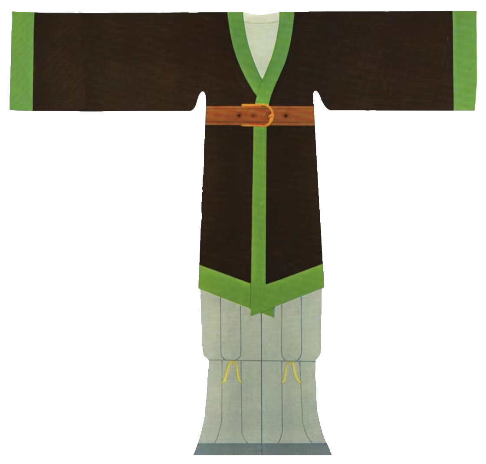

《
带有典型胡服特征的魏晋服饰
裤褶是典型的北方游牧民族的服饰。《急就篇》注褶字为：“褶，重衣之最在上者也，其形若袍，短身而广袖。一曰左衽之袍也。”从中可以看出裤褶的基本款式为上身穿着齐膝的大袖上衣，下身穿肥管裤。上衣短是为了方便骑射。这种服装原是北方游牧民族的传统服装，因此裤褶的面料多为粗厚的毛布材质。《急就篇》的注释中提到的“左衽之袍”也是少数民族服饰及胡服的一种较为典型的特征。胡服与汉族传统的右衽服饰不同，一般服装多为左衽。
魏晋时期服饰的演变
魏晋南北朝时期的女子服饰基本沿袭了汉代服饰特点，同时吸收了一些少数民族的服装式样，在传统服饰的基础上有所发展。裲裆也是北方少数民族的服装之一，最早是由军服中的裲裆铠演变来的。这种服装的款式类似于现代的坎肩或背心，没有衣袖的部分只有前后两片衣襟部分。这种服装结构既可以保躯干部分的温度，也方便手臂活动，既适应北方的气候也适用于游牧民族的骑射活动，具有明显的实用性胡服文化特征。裲裆在当时也是男女皆穿的服装。女性穿着的裲裆大多装饰有彩色的刺绣，起初女性将裲裆穿在里面，后来则穿在交领衣外。
》